The array model¶
The Numpy array model is quite powerful, but before delving into the details on how Numpy arrays can be manipulated, it is interesting to understand why they are much more efficient than Python lists. First, when a Numpy array is created, its elements are stored one next to the other (the memory storage is contiguous, see figure on the left for a 2-dimensional array), whereas in a Python list, elements are created before the list and they can be stored wherever in the memory (the memory storage is scattered, see figure on the right). In most systems, data from the main memory is transferred to the CPU via layers of caches, which implies that memory transfers from the cache to the CPU involve whole chunks of contiguous memory (a cache line) even if only few bytes in the cache line are actually requested by the CPU. As a consequence, a non-contiguous memory storage of the data will force the transfer of unneeded data from the cache and will incur a bandwidth penalty. In addition to that, modern architectures also have the possibility to anticipate transfers from the memory by prefetching the next cache lines. This mechanism will obviously better work when the data storage is contiguous. A second advantage of Numpy’s arrays over Python’s lists is that all elements occupy the same number of bytes, and as a consequence, the location of an element in the memory (its address) can be cheaply computed from its index and the location of the first element. There is no such relationship in Python lists: the location of each element has to be stored in the memory, so that every read or write access has the indirection overhead of transferring this element location to the CPU beforehand.
 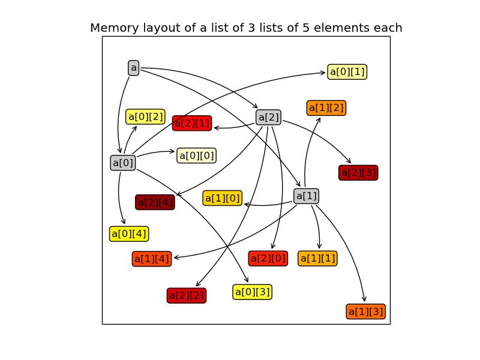
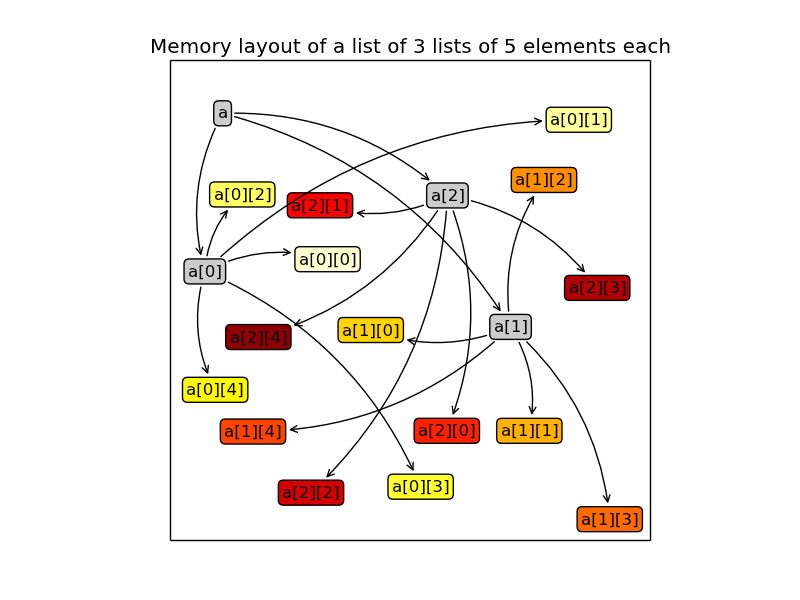
{kind=link}
The NumPy array (ndarray) is defined by 4 attributes:
dtype: The common type of the array’s data. It can be a basic data type such as integer, float and string of fixed length, or a structured data type which combines basic data types into records (more on this topic below). NumPy provides many more basic data types than Python does (int8, int16, int32, int64, uint8, uint16, ..., float16, float32, float64, float128 etc.).
Note
The set of the 24 basic data types can also be extended. A non-official extension defines a basic data type for quaternions for which usual operations are provided.
Warning
In Python, integer representation is only limited by the available memory and operations on integers never overflow. This convenience has a computational cost that is avoided by NumPy. The NumPy’s data types encode integers by using a fixed number of bytes and thus they can silently overflow.
Warning
The name float128 is misleading. This data type is unlikely to represent quadruple precision (but C type long double instead). Try:
>>> [np.finfo(_).eps for _ in (np.float16, np.float32, np.float64, np.float128)] >>> [0.00097656, 1.1920929e-07, 2.2204460492503131e-16, 1.084202172485504434e-19]shape: A tuple containing the array dimensions (the length of the array axes, in NumPy terminology).
Note
- a dimension of zero is valid
- the shape () is valid, it corresponds to a 0-ranked array, similar to a scalar.
strides: A tuple containing how many bytes should be walked in the memory to go from one element to the next one along each dimension.
>>> np.zeros((3, 5)).strides (40, 8)Note
The fast dimension is that with the smallest stride. By default, when an array is created, it is the last one (row-major storage order like C and unlike Fortran, Matlab and IDL), but note that this is not the case for every array:
>>> np.zeros((3, 5)).T.strides (8, 40)When iterating through a multi-dimensional array (check beforehand that you really have to...), make sure that you are indexing first the actual slow dimension(s) in the for loop(s).
ctypes.data: The memory location of the first array element (but you should not worry about it)
An array also has convenience attributes, which can be derived from the previous ones:
ndim: number of dimensions (or array’s rank, in NumPy wavering terminology) size: number of elements itemsize: number of bytes of one element nbytes: number of bytes of all elements
Note
The len function can be confusing when applied on arrays: it returns the number of elements along the first dimension only. It is better not to use it with arrays, and use .shape[0] instead for clarity.
Warning
In Python (so it is also true for NumPy arrays), the assignation operator ‘=’ does not make a copy. It adds a reference to the reference list of an object stored in memory. When the number of references drops to zero, the object will disappear and for arrays, the memory buffer will be released.
>>> a = np.arange(100)
>>> b = a
>>> id(a) == id(b)
True
So, to ensure that the arrays are different, you should explicitly make a copy:
>>> b = a.copy()
In the same vein, here is the wrong way to assign 2 to all the elements of an array:
>>> a = np.arange(5)
>>> a
array([0, 1, 2, 3, 4])
>>> a = 2
>>> a
2
The proper way to do it is:
>>> a = np.arange(5)
>>> a[...] = 2
>>> a
array([2, 2, 2, 2, 2])
Creating arrays¶
There are plenty of ways to create an array. The simplest one is to convert a Python list or tuple:
>>> np.array([1, 2, 3.14, 4]) array([ 1. , 2. , 3.14, 4. ])
The data type of the resulting array is inferred from the types of the elements in the sequence, but it can be explicitly set with the dtype keyword:
>>> np.array([1, 2, 3.14, 4], dtype=np.int8) array([1, 2, 3, 4], dtype=int8) >>> np.array([1, 2, 3.14, 4], dtype=complex) array([ 1.00+0.j, 2.00+0.j, 3.14+0.j, 4.00+0.j])
Multi-dimensional arrays can be created using the same mechanism by nesting sequences, the innermost ones corresponding to the last dimension. Here is an example of a 2-by-3 array:
>>> a = np.array([[1, 2, 3], [1, 0, 1]]) array([[1, 2, 3], [1, 0, 1]]) >>> a.shape (2, 3) >>> a[0, :] array([1, 2, 3]) >>> a[1, :] array([1, 0, 1])
Although it is cumbersome (we will see better ways to achieve that), a 4-by-1 array (a column) can be similarly created:
>>> np.array([[4], [-1], [2], [0]]) array([[ 4], [-1], [ 2], [ 0]])
Alternatively, when the array dimensions are known, the array can be allocated in memory and optionally filled with a particular value. The array may then be updated at a later stage.
zeros: allocate a 0-filled array of given shape
>>> np.zeros((2, 2)) array([[ 0., 0.], [ 0., 0.]])
ones: allocate a 1-filled array of given shape
>>> np.ones((2, 2)) array([[ 1., 1.], [ 1., 1.]])
full: allocate an array of given shape filled by a given value (NumPy 1.8)
>>> np.full((2, 2), np.pi) array([[ 3.14159265, 3.14159265], [ 3.14159265, 3.14159265]])
empty: allocate an array of given shape without initializing its values
Note
This function is much faster since to write to the memory is involved, but be careful to completely populate the array afterwards.
Note
By default, these functions return a float64 array. To specify another data type, use the dtype keyword.
It is possible to use another variable as a template to create a new array with the same data type and shape:
>>> a = np.array([[1, 2, 3], [3, 2, 1]]) >>> b = np.zeros_like(a) >>> c = np.ones_like(a) >>> d = np.full_like(a, 2.) >>> e = np.empty_like(a) >>> for _ in a, b, c, d, e: ... print(_.dtype, _.shape) (dtype('int64'), (2, 3)) (dtype('int64'), (2, 3)) (dtype('int64'), (2, 3)) (dtype('int64'), (2, 3)) (dtype('int64'), (2, 3))
Since discretization is at the heart of scientific computing, creation of grids has been made straightforward and it can be done in several ways:
arange: Return evenly spaced values (the number of elements is known).
>>> np.arange(10, dtype=float) array([ 0., 1., 2., 3., 4., 5., 6., 7., 8., 9.]) >>> start = 1 >>> step = 0.1 >>> n = 10 >>> start + np.arange(n).reshape(2, -1) * step array([[ 1. , 1.1, 1.2, 1.3, 1.4], [ 1.5, 1.6, 1.7, 1.8, 1.9]])
Note
other calling sequences than start + np.arange(n) * step can be used with arange, but there are little compelling reasons to use them (see next function linspace).
linspace: Return evenly spaced values (the boundaries are known).
>>> np.linspace(2, 4, 6) array([ 2. , 2.4, 2.8, 3.2, 3.6, 4. ])
logspace: Return numbers evenly spaced on a log scale. By default the base 10 is used. The end points specify the base’s powers.
>>> np.logspace(0, 2, 5) array([ 1., 3.16227766, 10., 31.6227766, 100.])
Note
unlike Python’s range builtin, the last point of the interval is included by default in the array returned by linspace and logspace.
meshgrid: Return coordinate matrices from two or more coordinate vectors.
>>> nx = 3 >>> ny = 2 >>> x_1d = np.linspace(0, 1, nx) >>> y_1d = np.linspace(0, 1, ny) >>> x_2d, yv_2d = np.meshgrid(x_1d, y_1d) >>> x_2d array([[ 0. , 0.5, 1. ], [ 0. , 0.5, 1. ]]) >>> y_2d array([[ 0., 0., 0.], [ 1., 1., 1.]]) >>> np.sqrt(x_2d**2 + y_2d**2) array([[ 0. , 0.5 , 1. ], [ 1. , 1.11803399, 1.41421356]])
mgrid: Return a dense multi-dimensional meshgrid.
Warning
Brackets are used and not parentheses.
>>> N = 4 >>> i, j = np.mgrid[0:N, 0:N] >>> i.shape, j.shape (4, 4), (4, 4) >>> i array([[0, 0, 0, 0], [1, 1, 1, 1], [2, 2, 2, 2], [3, 3, 3, 3]]) >>> j array([[0, 1, 2, 3], [0, 1, 2, 3], [0, 1, 2, 3], [0, 1, 2, 3]]) >>> distance = np.sqrt((i-1)**2 + (j-1)**2) >>> distance array([[ 1.41421356, 1. , 1.41421356, 2.23606798], [ 1. , 0. , 1. , 2. ], [ 1.41421356, 1. , 1.41421356, 2.23606798], [ 2.23606798, 2. , 2.23606798, 2.82842712]])
Another calling sequence specifies the bounds and the number of samples:
>>> i, j = np.mgrid[0:1:complex(3), 0:1:complex(3)] >>> i array([[ 0. , 0. , 0. ], [ 0.5, 0.5, 0.5], [ 1. , 1. , 1. ]]) >>> j array([[ 0. , 0.5, 1. ], [ 0. , 0.5, 1. ], [ 0. , 0.5, 1. ]])
ogrid: Return a sparse multi-dimensional meshgrid.
>>> N = 4 >>> i, j = np.ogrid[0:N, 0:N] >>> i.shape, j.shape (4, 1), (1, 4) >>> i array([[0], [1], [2], [3]]) >>> j array([[0, 1, 2, 3]])
The sparse grid can be manipulated using broadcasting to achieve the same result as that of the dense grid:
>>> distance = np.sqrt((i-1)**2 + (j-1)**2) >>> distance array([[ 1.41421356, 1. , 1.41421356, 2.23606798], [ 1. , 0. , 1. , 2. ], [ 1.41421356, 1. , 1.41421356, 2.23606798], [ 2.23606798, 2. , 2.23606798, 2.82842712]])
Similarly to mgrid, an alternate calling sequence can be used:
>>> i, j = np.ogrid[0:1:complex(3), 0:1:complex(3)] >>> i array([[ 0. ], [ 0.5], [ 1. ]]) >>> j array([[ 0. , 0.5, 1. ]])
Creation of arrays populated by pseudonumbers. The package numpy.random contains pseudonumber generators for the usual distributions. Many more are available in scipy.stats.
random_itegers: Return random integers between a lower and upper value, inclusive.
Note
randint also exists. It doesn’t do anything that random_integers cannot, except confusing the user. Stick with random_integers, which has a better name.
Note
Even if a default value exists for the lower value, it is better practice to specify both the lower and upper values (randint has not the same default value, so don’t bother memorizing it).
>>> np.random.random_integers(1, 6, (3, 2)) array([[5, 2], [3, 6], [1, 6]])
random_sample: Return uniformly distributed random floats in the half-open interval [0.0, 1.0).
Note
for the only purpose of confusing users even more, this function has 3 aliases random, randf and sample! Avoid them. And there’s also rand, see note below.
>>> np.random.random_sample((3, 2)) array([[ 0.55442892, 0.97919858], [ 0.40742057, 0.00879652], [ 0.098388836, 0.67112335]])
standard_nomal: Return random floats from the standard normal distribution.
>>> np.random.standard_normal((3, 2)) array([[ 1.72573865, 0.8938781 ], [ 0.37971588, -0.40010123], [-0.33761754, 0.07175398]])
Note
I prefer not to use MATLAB® equivalent shortcuts rand (for random_sample) and randn (for standard_normal), even if they are conveniently available in numpy‘s module namespace. Their calling sequence rand(d0, d1, ...) is inconsistent with most other NumPy functions such as zeros, ones, random_integers, random_sample, standard_normal, standard_cauchy etc., which take a tuple as first argument to specify the array shape.
Basic operations¶
Functions in NumPy are vectorized
np.sum: sum of elements np.cumsum: cumulative sum of elements np.product: product of elements np.cumproduct: cumulative product of elements np.sort: sort elements np.argsort: return the indices that would sort an array np.all: return True if all array elements evaluate to True np.any: return True if any array element evaluates to True np.min: return the minimum element of an array np.max: return the maximum element of an array Note
Python builtin functions all, any, min and max should not be used with NumPy arrays since 1) they are slow and 2) they will not work on multi-dimensional arrays.
With these functions, an axis can be specified: it is the axis that will be collapsed and along which the operation is performed.
>>> a = arange(8).reshape((2, 4)) >>> print(a) [[0 1 2 3] [4 5 6 7]] >>> print(np.sum(a, axis=0)) [ 4 6 8 10] >>> print(np.sum(a, axis=1)) [ 6 22]
Note
axes can be specified by starting from the last one, using negative values. -1 stands for the last axis, -2 for the last but one.
Most common operations with two operands are performed element-wise:
>>> a = np.array([[0, 1, 0], ... [2, 3, 4]]) >>> b = np.array([[2, 2, 2], ... [3, 3, 3]]) >>> a * b array([[ 0, 2, 0], [ 6, 9, 12]])
Boolean operations.
The operators not, and and or should not be used with arrays.
not → ~ or logical_not and → & or logical_and or → | or logical_or xor → ^ or logical_xor Note
The operators ~, &, | and ^ have a very high priority, so parenthesis must be used to combine expressions. The following example shows how to print the number of times that 1 or 10 are drawn from a uniform distribution:
>>> a = np.random.random_integers(1, 10, 1000) >>> np.sum((a == 1) | (a == 10)) 207
Exercise: Computation of 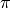 by Monte-Carlo sampling.
Given the random variables X and Y following the uniform distribution between -1 and 1, the probability for the point (X, Y) to be inside the unity disk is the ratio of the surface of the unity disk and that of the unity square, i.e. 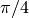. It is then possible possible to compute by drawing realizations of X and Y and counting the fraction of points (X, Y) inside the unity disk.
Vectorize the following pure Python code, by using NumPy arrays and functions.
from __future__ import division
import math
import random
NTOTAL = 1000000
random.seed(0)
ninside = 0
for i in xrange(NTOTAL):
x = random.uniform(-1, 1)
y = random.uniform(-1, 1)
ninside += math.sqrt(x**2 + y**2) < 1
pi = 4 * ninside / NTOTAL
print pi, abs(math.pi - pi) / math.pi
[Solution]
Indexing arrays¶
integers and slices: like Python
Warning
indexing starts at 0!
Warning
in slices, the stop point is excluded from the selection!
Note
negative indices are fine.
>>> a = np.arange(10) >>> a[3: -3] array([3, 4, 5, 6]) >>> a[::2] array([0, 2, 4, 6, 8]) >>> a.strides, a[::2].strides (8,), (16,)
The ellipsis ... replaces as many : as possible. For an array a of rank 4: a[..., 0, :] is equivalent to a[:, :, 0, :]
>>> a = np.arange((2, 3, 4, 5)) >>> a[..., 0].shape (2, 3, 4)
Note
a[i] is equivalent to a[i, ...]
A boolean array can be used as a mask to select elements.
>>> x = np.random.random_sample(1000) >>> x[x > 3] = 0
Note
Use boolean masks instead of the where function!
selection indexing: an integer array can also be used
>>> x = np.random.random_sample(1000) >>> index = np.argsort(x) >>> x[index[:10]] = 0
Exercise: Histogram
Complete the missing parts of the code below to do this exercise. Given a large number of particules of velocities 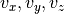 distributed according to the standard normal distribution, plot the histogram of the speed in 1, 2 and 3 dimensions:
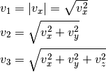
and compare it to the theoretical Maxwell distributions:
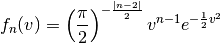
where  = 1, 2, 3 is the number of dimensions.
= 1, 2, 3 is the number of dimensions.
from __future__ import division
import numpy as np
import matplotlib.pyplot as mp
def velocity2speed(velocity, ndims):
""" Return the ndims-dimensional speed of the particles. """
return ...
def speed_distribution(speed, ndims):
"""
Return the probability distribution function of the ndims-dimensional
speed of the particles.
"""
return ...
NPARTICULES = 1000000
velocity = np.random.standard_normal((NPARTICULES, 3))
for ndims in (1, 2, 3):
speed = velocity2speed(...)
ax = mp.subplot(1, 3, ndims)
n, bins, patches = ax.hist(speed, ...)
ax.set_title('{}-d speed distribution'.format(ndims))
ax.set_xlim(0, 5)
ax.set_ylim(0, 0.9)
ax.set_xlabel('speed')
ax.plot(..., ..., 'r', linewidth=2)
mp.show()
[Solution]
Manipulating arrays¶
Transformations that change the shape but not the size
.reshape: Give a new shape.
Note
One shape dimension can be -1. In this case, the value is inferred from the number of elements of the array and the remaining dimensions.
>>> a = np.ones((4, 2, 7)) >>> b = a.reshape((4, -1)) >>> b.shape (4, 14)
.ravel: Flatten an array to one dimension.
Note
By default, in the reshape and ravel transformations, the elements of the input and output array are identical when both travelled along the row-major order.
Note
The .ravel method will attempt to return a view of the array, but if the elements of the array cannot be travelled using a constant stride, a copy will be returned. The .flatten method is similar, but always returns a copy and should therefore be used less frequently.
.T: Transpose of the array.
.swapaxes: Interchange two axes.
np.rollaxis: Roll a specified axis backwards, until it lies in a given position.
.squeeze: Remove single-dimensional entries from the shape of the array.
It is also easy to add a new dimension, using None (or equivalently np.newaxis):
>>> a = np.zeros((3, 5)) >>> a[..., None].shape (3, 5, 1) >>> a[:, None, :].shape (3, 1, 5) >>> a[None, ...].shape (1, 3, 5)
We will see later how much this notation can be handy when used in conjonction with broadcasting.
Transformations that change the size
np.resize: Return a new array with the specified shape, repeating the array if necessary tile: Construct an array by repeating A the given number of times. resize: TBD repeat: TBD
Exercise:
Write a function that returns the mean of each 100 element block of a vector of size 100×N. The first version will loop over the vector slices by using a list comprehension and the second one will use NumPy transformation functions to avoid the for loop. The vector elements will be drawn from any statistical distribution.
[Solution]
Views and copies¶
A powerful aspect of NumPy’s array model is that many operations can be performed without copying the data, which can be expensive especially when handling big datasets. For instance, indexing using a slice returns a view on the initial array, which mean that the initial and sliced arrays share the same memory buffer. This is a frequent source a confusion, since modifying the view will affect the original array. It is then important to know which operations return a view and which ones a copy. A view on an array is different from a reference: even though they share the same memory buffer, the viewing and viewed arrays are different Python objects:
>>> a = np.zeros(10)
>>> b = a.view()
>>> id(a) == id(b)
False
>>> a.ctypes.data == b.ctypes.data
True
Exercise:
Given the function
>>> def isview(a, b):
... """
... Return True if b is a view on a.
... (It is assumed that a's memory buffer is contiguous)
... """
... return a.ctypes.data <= b.ctypes.data < a.ctypes.data + a.nbytes
and the array
>>> a = np.arange(24, dtype=float)
>>> a.shape = (3, 2, 4)
let’s first check that slicing an array does not copy it:
>>> isview(a, a[:2, 1, 1:3])
True
Then, check what the following actions do and whether their result is a view or a copy:
a.copy()
a[:, ::-1, :]
a.view(complex)
a.view([('position', float, 3), ('mass', float)])
a.reshape((6, -1))
a[..., None]
a.ravel()
a.flatten()
a.T
a.T.ravel()
a.swapaxes(0, 1)
np.rollaxis(a, 2)
a.astype(int)
a.astype(float)
np.asarray(a)
np.asarray(a, dtype=float)
np.asarray(a, dtype=int)
np.array(a, dtype=float, copy=False)
Combining arrays¶
r_: Translate slice objects to concatenation along the first axis.
>>> np.r_[np.array([1,2,3]), 0, 0, np.array([4,5,6])] array([1, 2, 3, 0, 0, 4, 5, 6])hstack: Stack arrays in sequence horizontally (column wise).
vstack: Stack arrays in sequence vertically (row wise).
dstack: Stack arrays in sequence depth wise (along third axis).
concatenate: Join a sequence of arrays together.
column_stack: Stack 1-D arrays as columns into a 2-D array.
row_stack: Stack arrays in sequence vertically (row wise).
Broadcasting¶
Broadcasting allows operations (such as addition, multiplication etc.) which are normally element-wise to be carried on arrays of different shapes. It is a virtual replication of the arrays along the missing dimensions. It can be seen as a generalization of operations involving an array and a scalar.
- the addition of a scalar on an matrix can be seen as the addition of a matrix with identical elements (and same dimensions).
- the addition of a row on a matrix will be seen as the addition of a matrix with replicated rows (the number of columns must match).
- conversely the addition of a column on a matrix will be seen as the addition of a matrix with replicated columns (the number of rows must match)
What if the rank of the arrays is greater than 2? There is no restriction on the rank: any dimension of length 1 is broadcastable and is virtually replicated to match the other array’s dimension length. The two arrays may have different broadcastable dimensions. If this happens, the result of the operation will have more elements than any of the operands.
Can it work on arrays of different ranks? Sure! Dimensions of length 1 are prepended (added on the left of the array shape) until the two arrays have the same rank. As a consequence, the following operation is possible:
>>> np.zeros((5, 9)) + np.ones(9)
but not this one, since the righmost dimensions are different:
>>> np.zeros((5, 9)) + np.ones(5) ValueError: operands could not be broadcast together with shapes (5,9) (5)
So for columns, an additional dimension must be specified and added on the right:
>>> np.zeros((5, 9)) + np.ones(5)[:, None]
Can it work on more than two arrays? Yes again! But you have to find an element-wise operation with more than two operands...
Since the replication is virtual, no memory is wasted. Broadcasting is fast. Use it wherever possible, just keep an eye on the size of the broadcast result to make sure that it does not become too large.
Exercise:
Can the arrays of the following shapes be broadcast together? If yes, what would be the shape of the result?
- (7, 1) and (7, 4)
- (7,) and (4, 7)
- (3, 3) and (2, 3)
- (1, 1, 1, 8) and (1, 9, 1)
- (4, 1, 9) and (3, 1)
[Solution]
Exercise:
Remove the for loops in this code by using broadcasting and measure the improvement in execution time.
from __future__ import division
import matplotlib.pyplot as mp
import numpy as np
NDETECTORS = 8
NSAMPLES = 1000
SAMPLING_PERIOD = 0.1
GLITCH_TAU = 0.3
GLITCH_AMPL = 20
GAIN_SIGMA = 0.03
SOURCE_AMPL = 7
SOURCE_PERIOD = 5
NOISE_SIGMA = 0.7
time = np.arange(NSAMPLES) * SAMPLING_PERIOD
glitch = np.zeros(NSAMPLES)
glitch[100:] = GLITCH_AMPL * np.exp(-time[:-100] / GLITCH_TAU)
gain = 1 + GAIN_SIGMA * np.random.standard_normal(NDETECTORS)
offset = np.arange(NDETECTORS)
source = SOURCE_AMPL * np.sin(2 * np.pi * time / SOURCE_PERIOD)
noise = NOISE_SIGMA * np.random.standard_normal((NDETECTORS, NSAMPLES))
signal = np.empty((NDETECTORS, NSAMPLES))
for idet in xrange(NDETECTORS):
for isample in xrange(NSAMPLES):
signal[idet, isample] = gain[idet] * source[isample] + \
glitch[isample] + offset[idet] + \
noise[idet, isample]
mp.figure()
mp.subplot('211')
mp.imshow(signal, aspect='auto', interpolation='none')
mp.xlabel('sample')
mp.ylabel('detector')
mp.subplot('212')
for s in signal:
mp.plot(time, s)
mp.xlabel('time [s]')
mp.ylabel('signal')
mp.show()
[Solution]
Exercise:
Write a one-liner function that normalizes by the euclidian norm M N-dimensional real vectors packed in an array of shape (M, N).
[Solution]
Universal functions (Ufuncs)¶
Arrays and universal functions are the two fundamental NumPy building blocks. The most basic operations on arrays are performed by these ufuncs.
| Operator | Ufunc |
|---|---|
| + | np.add |
| - | np.subtract |
| * | np.multiply |
| / | np.true_divide (with: from __future__ import division) |
| // | np.floor_divide |
| ** | np.power |
| % | np.mod |
| == | np.equal |
| != | np.not_equal |
| < | np.less |
| <= | np.less_equal |
| > | np.greater |
| >= | np.greater_equal |
| ~ | np.logical_not or np.bitwise_not |
| & | np.logical_and or np.bitwise_and |
| | | np.logical_or or np.bitwise_or |
| ^ | np.logical_xor or np.bitwise_xor |
Many functions are also implemented as ufuncs: absolute, conj, sign, cos, sin, tan, arccos, arcsin, arctan2 and many more...
A ufunc has the following characteritics:
a buffer can be provided for the output, which can be useful to avoid temporaries.
>>> N = 1000000 >>> x = np.random.random_sample(N) >>> %timeit 2 * np.sin(x) + x 10 loops, best of 3: 45 ms per loop >>> out = np.empty_like(x) >>> %timeit global out; np.sin(x, out); out *= 2; out += x 10 loops, best of 3: 37 ms per loop
it implements the broadcasting mechanism on its inputs and outputs.
it has the following methods (which are only useful for ufuncs with two arguments):
reduce: reduce a to a scalar or a‘s dimension by one, by applying the ufunc along all axes or one specified axis. Equivalent to:
>>> r = x[0] >>> for i in range(1, len(x) - 1): ... r = ufunc(r, x[i])
accumulate: accumulate the result of applying the ufunc to all elements. Equivalent to:
>>> a = np.empty(len(x)) >>> a[0] = x[0] >>> for i in range(1, len(x) - 1): ... a[i] = ufunc(a[i - 1], x[i])
outer: outer product equivalent to:
>>> r = np.empty(len(x), len(y)) >>> for i in range(len(x)): ... for j in range(len(y)): ... r[i, j] = ufunc(x[i], y[j])
Example: the truth table of logical operators can be obtained straightforwardly using this method.
>>> tf = [True, False] >>> np.logical_and.outer(tf, tf) array([[ True, False], [False, False]], dtype=bool) >>> np.logical_or.outer(tf, tf) array([[ True, True], [ True, False]], dtype=bool)
The use of ufuncs in NumPy is pervasive and the following non-ufunc functions, which are amongst the most basic ones, are using internally the ufunc methods that we have just described:
Function Under the hood np.sum np.add.reduce np.cumsum np.add.accumulate np.product np.multiply.reduce np.cumproduct np.multiply.accumulate np.min np.minimum.reduce np.max np.maximum.reduce np.any np.logical_or.reduce np.all np.logical_and.reduce
It is relatively easy to write ufuncs in C.
Exercise:
Using ufunc capabilities, create 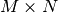 matrices  and
and  such that
such that
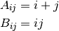
with 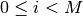 and 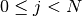
[Solution]
Special values¶
NumPy supports IEEE 754 floating point special values NaN and inf. These literal values are available as np.nan and np.inf and are stored as Python float.
NumPy’s behaviour when an IEEE exception occurs is configurable with the seterr function. If your code produces NaNs, you can raise exceptions when NaN are triggered to know where the problem happens:
>>> np.seterr(invalid='raise')
To inspect these special values:
| isinf: | Return True for positive or negative infinite numbers |
|---|---|
| isnan: | Return True for NaN elements >>> from __future__ import division
>>> N = 1000000
>>> a = np.random.random_integers(0, 10, N)
>>> b = np.random.random_integers(0, 10, N)
>>> c = a / b
>>> np.all(np.isnan(c) == ((a == 0) & (b == 0)))
True
|
| isfinite: | Return True for finite elements (non-infinite and non-NaN) |
And to make them non-special:
| nan_to_num: | Set NaN to zero, +inf to max float and -inf to min float |
|---|
When NaN values are present in an array, most NumPy functions will propagate them to the result instead of restricting the operation to the non-NaN elements. To explicitly discard the NaNs, one should call the following functions: nanmin, nanmax, nanargmin, nanargmax, nanmean, nanstd, nanvar, nansum.
Structured data types¶
Basic data types can be combined to form structured data types, akin to C’s struct or Fortran’s derived types. The synthax to create such records is strict, it must be a list of tuples, each tuple containing the name, data type and optionally the shape of the field. The field values are accessed by using brackets enclosing the field names.
>>> point_dtype = [('x', float), ('y', float), ('z', float)]
>>> n = 100
>>> points = np.empty(n, dtype=point_dtype)
>>> points['x'] = np.random.random_sample(n)
>>> points['y'] = np.random.random_sample(n)
>>> points['z'] = np.random.random_sample(n)
>>> points[0]
(0.1620762355727834, 0.2395019980532217, 0.9167745701692562)
>>> points[10] = (1, 1 , 0)
Another example, in which the shapes of the fields are specified:
>>> spectra_dtype = [('fluxdensity', float, 100),
... ('wavelength', float, 100)]
>>> spectrum = np.zeros((), dtype=spectra_dtype)
>>> spectrum['wavelength'].size
100
Note
Fields can be strings, but since array elements must have a fixed common itemsize, it is mandatory to specify the maximum number of characters. Structured data types can also be combined together:
>>> galaxy_dtype = [('name', 'S256'),
... ('pos', point_dtype)]
>>> galaxy = np.zeros(10, dtype=galaxy_dtype)
>>> galaxy[0] = ('M81', (1, -1, 0))
>>> galaxy[0]['name']
'M81'
>>> galaxy[0]['pos']['x'], galaxy[0]['pos']['y'], galaxy[0]['pos']['z']
(1.0, -1.0, 0.0)
Warning
Indexing using boolean or integer arrays makes a copy. In the following expression, a temporary structured array is created to store galaxy[[0, 1]]
>>> galaxy[[0, 1]]['name'] = 'new name 1', 'new name 2'
and this is where the update of the field name takes place. As a consequence, the original array is left intact:
>>> print(galaxy[:2]['name'])
['M81' '']
To circumvent this potential source of mistakes using boolean and integer arrays, the indexing should be performed rightmost:
>>> galaxy['name'][[0, 1]] = 'new name 1', 'new name 2'
>>> print(galaxy[:2]['name'])
Note that using integers or slices for indexing does not make a copy, so rightmost indexing is not required in these cases:
>>> galaxy[:2]['name'] = 'galaxy 1', 'galaxy 2'
>>> print(galaxy[:2]['name'])
['galaxy 1' 'galaxy 2']
Exercise: Indirect sort.
An indirect sort consists in using an array to sort another one.
First, create a structured dtype with a string field name (no more than 10 characters) and an integer field age. Then use it to allocate a large array of people. The name field will be populated with id1, id2, etc. and the age field according to any random distribution. Sort the people according to their age by two methods: 1) using the function np.argsort and 2) looking at the np.sort documentation related to structured arrays.
[Solution]
Record arrays¶
Accessing fields in structured arrays by using brackets can be a bit clumsy. Fortunately, it is possible to access these fields in a more concise way, as attributes, by using record arrays. It can be done in the following way (field values are not initialized):
>>> source_dtype = [('name', 'S256'),
... ('ra', float),
... ('dec', float)]
>>> source = np.recarray(10, dtype=source_dtype)
>>> source[0] = ('M81', 148.8882208, 69.0652947)
>>> print(source[0].name, source[0].ra, source[0].dec)
('M81', 148.8882208, 69.065294699999995)
An existing structured array can be viewed as a recarray:
>>> source = np.empty(10, dtype=source_dtype).view(np.recarray)
>>> source[0] = ('M81', 148.8882208, 69.0652947)
Warning
... but attribute access is broken for scalars (NumPy 1.8):
>>> source[0].name
AttributeError: 'numpy.void' object has no attribute 'name'
So one should write:
>>> source.name[0]
'M81'
And even for record arrays obtained with the np.recarray constructor, attribute access is broken (NumPy 1.8) for scalars with nested data types (write galaxy.pos.x[0] instead of galaxy[0].pos.x as well).
Dense linear algebra¶
Although a specific class (matrix) does exist to facilitate matrix handling (the signs * and ** have been redefined to mean matrix multiplication and power), it is seldom used in practice, the reason being that it is more frequent to deal with arrays of dimensions larger than two.
In the NumPy name space:
| dot: | Vector-vector, matrix-vector or matrix-matrix dot product Note 1-dimensional arrays are used as column vectors: >>> M = np.array([[1, 2],
... [0, 1]])
>>> x = np.array([1, 1])
>>> np.dot(M, x)
array([3, 1])
but beware that the transpose of a 1-dimensional array is still 1-dimensional, so the expression 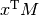 should be written as: >>> np.dot(x, M)
or >>> np.dot(M.T, x)
|
|---|---|
| tensordot: | Compute tensor dot product along specified axes |
| einsum: | Evaluate the Einstein summation convention on the operands |
| eye: | Return the identity matrix |
The NumPy package linalg has the following functions:
| norm: | Vector or matrix norm |
|---|---|
| inv: | Inverse of a square matrix |
| solve: | Solve a linear system of equations |
| det: | Determinant of a square matrix |
| lstsq: | Solve linear least-squares problem |
| pinv: | Pseudo-inverse (Moore-Penrose) calculated using a singular value decomposition |
| matrix_power: | Integer power of a square matrix |
Eigenvalues and decompositions:
| eig: | Eigenvalues and vectors of a square matrix |
|---|---|
| eigh: | Eigenvalues and eigenvectors of a Hermitian matrix |
| eigvals: | Eigenvalues of a square matrix |
| eigvalsh: | Eigenvalues of a Hermitian matrix |
| cond: | Compute the condition number of a matrix |
| qr: | QR decomposition of a matrix |
| svd: | Singular value decomposition of a matrix |
| cholesky: | Cholesky decomposition of a matrix |
Tensor operations:
| tensorsolve: | Solve a linear tensor equation |
|---|---|
| tensorinv: | Calculate an inverse of a tensor |